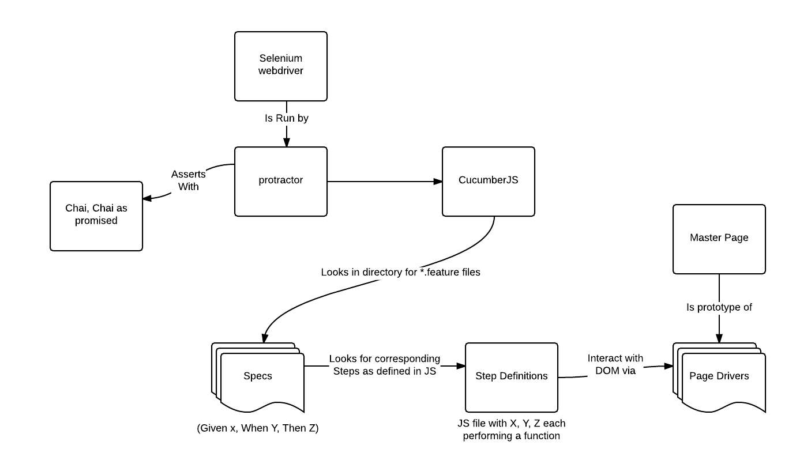

Lessons Learned:
CucumberJS & Protractor
Overview
- The theory: What we're trying to do
- The practical: The implementation of Protractor, Cucumber
Preface:
- Work in progress
- Socratic defense: I have no idea what I'm doing
- This ought to be viewed as part of wider discussions about the economics of testing
- this is a `trench dispatch`, not a set of best-practices
The business objective: Continuous Delivery
- Context: AngularJS, Mobile development
- Protractor - Selenium for AngularJS
- CucumberJS - A BDD Syntax methodology:
Given The user is logged in When The user clicks on on the "edit" button Then The edit modal should appear
Theory: take acceptance criteria, make tests, make tests pass
Technical Intent
BDD's ideals: Minimizing crossover and waste between team functions
'top down' approach for testing for developers
Remove Fragility, make devs aware of automation
The future: mobile automation and testing
The case for e2e testing for devs

Source: Martin Fowler
Why should you care?
- Slow to run, but enormous coverage written fast
- True integration - tests everything
- Provides certainty, continuous delivery probably impossible without it
To use Cucumber or Jasmine frameworks?
"Will the team (everyone, not only the tech people) benefit from scenarios written in plain English? Is there a chance it'll help someone understand things better and communicate more efficiently?"
Julien Biezemans, Interview with infoQ
Not sure? use Jasmine, Cucumber's use cases are narrow, may work for us, probably not for everyone.
Using Cucumber...
- Benefits:
- Engagement in development and testing by business with features
- Better scope-creep prevention as business is more aware of features being developed
- Better BDD syntax
- Costs
- Framework overhead (having to write feature files, Step Definitions)
- Very new, somewhat unstable, little support, annoying debugging
- popularity in decline in Ruby
BDD's goal of cross-functional teamwork?
There is tension between business documents and technical ones:
Business is concerned with conveying intent in a timely, communicable fashion.
Scenario free Delivery When The customer has ordered 10 books Then They should have free delivery
Techs are concerned with reusability, making it work.
Scenario Free delivery Given The Customer is logged in And The customer is on the "/orders" page And the threshold for free delivery is "10" books And the customer is <type> with <books> in the cart When The customer clicks on "#order-button" Then "#delivery-cost-field" should be "$0"
If techs are editing the feature-files for reusability, what benefit are they getting over putting a simple comment above their tests?
Solution: abstract away low-level functionality with page-objects, keep specs high-level
Architecture 
-
Implementation
- Addressing the problems of brittleness in selenium
- Screenshot testing and the benefits of the top-down approach
- Browsers in use
- The future: Mobile automation
- The Async problem
- NEARLY ALL PROTRACTOR ACTIONS ARE ASYNC!?!
- There are a large number of series operations required
- Particularly difficult for QA's
- Protractor does make a good start on handling promises
- Solution: employ Async, Q, Co, chai-as-promised liberally
- gnode for anything you need with ES6
-
The Brittleness Problem
- Page Drivers
- Data Automation Tags
- Page inheritance
-
Looking forward
- Apium
- Selendroid, Android, IOS automation
- Saucelabs and third-party testing platforms
- IOS automation
Anything of interest here?
make new mistakes, don't repeat ours. Example repo:
http://bit.ly/1tSflCTCriticism, suggestions appreciated.
dporter@seek.com.au